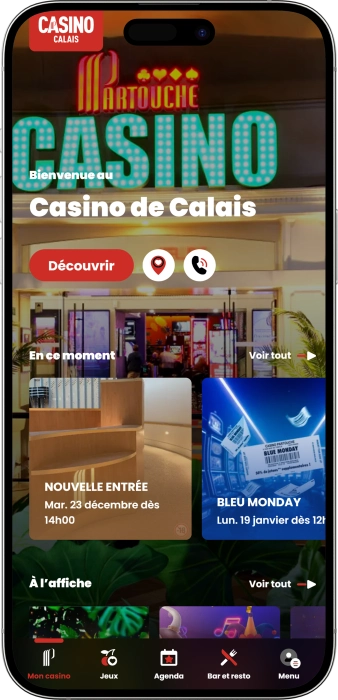

Offre de bienvenue exclusive de
Offre de bienvenue exclusive de
Casino de Calais — jeux, ambiance, bar et événements
Top casinos
Détails du bonus
Casino
Bonus
Note
Tours gratuits
Plus d'infos
Obtenir
Avantages
- Le Casino de Calais séduit par un espace de jeu vivant où l’on alterne machines, jeux électroniques et tables.
-
Jackpots progressifs sur les machines chaque jour.
-
Roulette électronique pour des gains rapides.
-
Blackjack et Ultimate Poker, jeu stratégique.
-
Offres de jeu fréquentes, crédits bonus.
-
Horaires pratiques, jusqu’à tard la nuit.
-
Bar et brasserie pour une pause.
-
Emplacement central, accès simple à pied.
- L’ambiance est conviviale et urbaine, idéale pour une sortie mêlant divertissement et détente. Les animations régulières ajoutent une vraie dimension « soirée » au lieu.
Casino de Calais App


À propos Casino de Calais
Le Casino de Calais se distingue par un rythme de jeu très accessible : machines et roulette électronique pour l’action, tables pour la stratégie. L’expérience est renforcée par le bar, la brasserie et les animations, qui transforment la visite en vraie soirée.
- Jackpots jusqu’à 50 000€+.
- Free Play 10–50€ souvent.
- Offres cashback 5–10% parfois.
Le Casino de Calais est un casino de ville, facile à découvrir sans préparation. L’intérieur propose généralement une ambiance chaleureuse et dynamique, pensée pour le confort. L’offre de jeu combine machines à sous, jeux électroniques et quelques tables classiques, ce qui convient à tous les profils.
Les débutants apprécient la simplicité des postes électroniques pour apprendre rapidement. Les joueurs habitués aiment alterner entre stratégie et jeu plus rapide. Le bar et l’espace restauration renforcent la dimension détente. Des animations ponctuent l’année et donnent envie de revenir en groupe. Les conditions d’accès restent classiques : âge, pièce d’identité et tenue correcte. En soirée, l’atmosphère devient plus festive, portée par le divertissement. Au final, le Casino de Calais s’adapte aussi bien à une visite courte qu’à une vraie sortie nocturne.
Casino de Calais : style, ambiance, jeux et détente
Le Casino de Calais s’apparente à un casino urbain moderne, pensé pour être chaleureux et vivant. L’objectif n’est généralement pas l’excès de luxe, mais le confort : éclairage agréable, espaces bien organisés et circulation simple. Le soir, l’ambiance devient plus festive avec davantage de visiteurs et un volet animation plus marqué. Pour ceux qui préfèrent un rythme calme, la journée reste idéale, car il est plus facile de choisir son jeu et de profiter de l’espace.
Les horaires sont conçus pour convenir à une visite en journée comme à une sortie tardive. En règle générale, le casino ouvre le matin et ferme en pleine nuit, avec une amplitude renforcée en fin de semaine pour accompagner le public nocturne. Cela permet de planifier une expérience complète : jeu, restauration, bar, puis ambiance de soirée. Cette flexibilité rend le lieu accessible aussi bien pour une courte escale que pour une nuit de divertissement.
L’offre de jeu du Casino de Calais se concentre autour des machines à sous et des postes électroniques, appréciés pour leur variété et leur rythme rapide. La roulette électronique et le blackjack électronique attirent ceux qui aiment les mises simples et les parties fluides. Les amateurs de tradition trouvent aussi des tables où la stratégie et la discipline font la différence. Le résultat est une proposition équilibrée, qui permet de varier facilement selon l’humeur.
Le bar et la restauration complètent l’expérience et renforcent la dimension « sortie ». Le bar est parfait pour une pause, un cocktail ou un snack entre deux sessions, tandis que la brasserie convient davantage à un repas posé. Ce format plaît particulièrement aux groupes : chacun peut vivre sa soirée à son rythme, sans quitter le même lieu. La cuisine se veut généralement généreuse et adaptée à une soirée prolongée.
Les événements et animations occupent une place importante, notamment les week‑ends et pendant les périodes festives. Soirées à thème, formats spectacles et rendez‑vous ludiques donnent envie de venir même sans objectif de jeu précis. L’accent est souvent mis sur la convivialité : musique, ambiance, petites animations et moments partagés. Des espaces dédiés peuvent accueillir des événements privés, ce qui rend le casino intéressant pour des soirées d’entreprise ou des célébrations.
Côté avantages, les offres en casino terrestre passent le plus souvent par une carte de fidélité, des invitations et des crédits de jeu. On peut retrouver du Free Play, des attentions anniversaire, des soirées à points renforcés et des avantages bar‑restaurant. La fidélité apporte aussi du service : invitations prioritaires, offres personnalisées et accès à certains tirages au sort. Le Casino de Calais vise ainsi un équilibre entre jeu, convivialité et expérience de soirée.
Service et aspects financiers au Casino de Calais : équipe, paiements, gains
Le personnel du Casino de Calais est généralement organisé pour accompagner le client à chaque étape : entrée, choix des jeux, assistance et service au bar. Dans la salle, des équipes peuvent aider à comprendre le fonctionnement des machines, à créer une carte de fidélité et à utiliser les postes électroniques. Aux tables, les croupiers assurent le rythme, la régularité des mises et l’ambiance. Cette présence rend l’expérience plus accessible, surtout pour les nouveaux visiteurs.
La langue principale reste le français, et il est fréquent que l’on puisse obtenir une aide basique en anglais pour des questions simples, notamment avec un public de passage. Dans les zones de jeu, la communication est souvent légère : interfaces claires, règles affichées, assistance sur demande. Pour une visite longue ou un événement, le meilleur réflexe est de passer au point d’accueil afin d’obtenir les informations pratiques. Cela facilite l’organisation et réduit les incertitudes.
La devise utilisée est l’euro, qui s’applique aux mises, aux opérations de caisse et aux consommations. Les paiements acceptés combinent le plus souvent espèces et cartes bancaires, avec parfois des options sans contact selon les terminaux. Beaucoup de visiteurs préfèrent alimenter leur budget jeu en espèces et régler la restauration par carte. Pour un usage 100% dématérialisé, il est recommandé de vérifier les conditions de la caisse et des postes de jeu.
Les distributeurs automatiques et l’éventuel change varient selon l’organisation locale : un DAB peut se trouver sur place ou à proximité, tandis que le change se fait généralement via des services bancaires en ville. Les frais et limites dépendent de votre banque, il est donc utile de vérifier les plafonds avant la sortie. Avoir des euros à l’avance évite de perdre du temps pendant la soirée. Séparer budget jeu et budget détente aide aussi à garder une expérience maîtrisée.
Le retrait des gains se fait en casino terrestre via la caisse : vous validez le montant, présentez si besoin une pièce d’identité et recevez un paiement selon la procédure interne. Pour des sommes importantes, des contrôles supplémentaires peuvent exister, conformément aux pratiques de sécurité financière. Selon les montants, certaines solutions peuvent inclure un règlement non‑cash, mais cela dépend des règles de l’établissement. Conserver les justificatifs est toujours une bonne idée, surtout en cas de gros gain.
La fiscalité dépend du profil du joueur et des règles applicables à sa situation personnelle, il n’existe donc pas de réponse universelle. Le casino applique sa procédure de paiement, tandis que les obligations éventuelles relèvent du statut du joueur et de son cadre légal. Pour un gain élevé, il est conseillé de demander à la caisse les documents disponibles et, si nécessaire, de consulter un spécialiste. Cette prudence permet de profiter pleinement de l’expérience.
Règles de visite du Casino de Calais : tenue, accès, interdits, accès et stationnement
Le Casino de Calais accueille selon des règles classiques : accès réservé aux adultes et présentation d’une pièce d’identité. Un contrôle à l’entrée est généralement en place pour garantir la sécurité et une ambiance agréable. La tenue doit être correcte : une apparence soignée est attendue, en évitant les styles trop sportifs ou inadaptés. À l’intérieur, le respect des autres joueurs et du personnel est essentiel afin de préserver le confort de tous. Les photos et vidéos sont souvent limitées dans les espaces de jeu pour protéger la confidentialité. L’usage du téléphone peut aussi être encadré près des tables et de la caisse. Certaines zones, notamment les tables, peuvent imposer des règles de comportement supplémentaires. Le tabac est généralement soumis aux règles du lieu ou à des espaces dédiés. Les soirs de week‑end, arriver plus tôt améliore l’expérience car l’affluence augmente. En voiture, il faut prévoir le stationnement en ville et les zones de parking. À pied, l’accès est simple grâce à l’environnement central.
Règles et conditions clés
- • Âge 18+ — accès réservé aux adultes, pièce d’identité demandée.
- • Pièce d’identité obligatoire — passeport ou document officiel pour l’entrée.
- • Tenue correcte exigée — apparence soignée, éviter plage et tenue trop sportive.
- • Interdiction de troubles — agressivité, conflits et perturbations du jeu proscrits.
- • Restrictions photo/vidéo — filmer les tables et les clients est généralement interdit.
- • Règles aux tables — suivre les consignes des croupiers, respecter mises et déroulé.
- • Alcool et responsabilité — service pouvant être limité en cas d’ivresse manifeste.
- • Contrôles de sécurité — vérifications possibles aux heures d’affluence.
Accès et stationnement
- • À pied / transports urbains — pratique grâce à l’emplacement central.
- • En voiture — privilégier les parkings urbains à proximité et respecter la réglementation.
- • Taxi / services VTC — utile le soir, surtout après les animations.
Programme de fidélité du Casino de Calais : niveaux, bonus et avantages
Le programme de fidélité du Casino de Calais repose généralement sur une carte club qui enregistre l’activité du joueur et la transforme en offres et privilèges. Le principe est simple : vous jouez à votre rythme et le système cumule des points ou des unités de statut. L’intérêt principal réside dans les offres personnalisées : free play, crédits bonus, invitations et attentions au bar ou à la brasserie. Au‑delà du jeu, la fidélité apporte du confort : accès prioritaire à certains événements, avantages de service et promotions réservées. L’impact est souvent plus visible le soir et le week‑end, périodes où les opérations spéciales sont plus fréquentes. La carte peut aussi aider à mieux gérer son budget grâce au suivi des avantages. Pour les visiteurs réguliers, les bénéfices augmentent par paliers et deviennent tangibles après quelques passages. Les gains de points sont souvent optimisés sur les machines et les postes électroniques, tandis que les tables suivent des règles internes. De nombreuses offres sont liées au calendrier : anniversaire, fêtes, saisons et tirages spéciaux. Plus la fréquentation est régulière, plus les propositions deviennent ciblées. Au final, la fidélité transforme la visite en expérience « club », rentable et confortable.
Conditions d’inscription
- • Âge 18+ et pièce d’identité — inscription réservée aux adultes.
- • Fiche client — informations de base pour l’identification.
- • Remise de la carte — délivrée sur place après inscription.
- • Activation en caisse — association au profil pour les avantages.
- • Accord notifications — pour recevoir les offres personnalisées.
Niveaux et comment les obtenir
- • Classic — niveau d’entrée dès l’inscription ; points sur jeu et visites.
- • Silver — avec visites régulières ; plus de Free Play et d’invitations.
- • Gold — forte activité ; plafonds d’offres et services renforcés.
- • VIP — sur invitation ; personnalisation maximale et événements privés.
Bonus et privilèges
- • Free Play 10–30€ — crédit jeu sur machines sélectionnées en jours promo.
- • Bonus Play 20–50€ — crédit renforcé pour membres actifs le week‑end.
- • Cashback 5–10% — retour partiel des pertes sous forme de crédits en opération.
- • Anniversaire 10–25€ — attention sous forme de crédit ou bon bar/jeu.
- • Points doublés 2× — créneaux où le statut progresse plus vite.
- • Invitations événements — accès soirées à thème, spectacles, animations.
- • Avantages bar/brasserie 5–20€ — bons ou réductions sous conditions.
- • Tirages 500–5 000€ — tournois/jeux avec lots en argent ou crédits.
- • Service prioritaire — démarches plus rapides, accompagnement renforcé.
- • Offres sur‑mesure — packs adaptés à vos habitudes de jeu.
Fournisseurs de logiciels
Divertissement et jeux au Casino de Calais
Offres et promotions du Casino de Calais : bonus, gains et temps forts
En plus de la carte club, le Casino de Calais propose souvent des opérations accessibles à tous, y compris aux visiteurs occasionnels. Ces promotions sont généralement liées à des jours précis, à des horaires ou à des thèmes saisonniers pour renforcer l’émotion du jeu. Côté machines, on retrouve fréquemment des crédits de démarrage, des tournois basés sur la performance et des tirages au sort en journée promo. Les jeux électroniques se prêtent bien aux formats dynamiques : coupons, sessions animées et mécaniques « boostées ». Pour les tables, l’intérêt se situe davantage dans l’ambiance : soirées spéciales, mini‑défis et rendez‑vous événementiels. À cela s’ajoutent des offres bar‑restauration, qui transforment la visite en sortie complète. Les événements saisonniers renforcent la convivialité avec décorations et scénarios de soirée. Pour le public, c’est une manière simple d’obtenir un avantage immédiat, même lors d’une première visite. Les modalités évoluent selon le calendrier, il est donc utile de consulter les annonces sur place. Choisir une soirée qui combine animation et promotion maximise l’expérience. Ainsi, le Casino de Calais ne se résume pas aux mises : il propose aussi une vraie dimension événementielle.
Promotions et offres
- • Welcome Free Play 10€ — crédit de démarrage ponctuel pour nouveaux visiteurs en période promo.
- • Happy Hours 2× crédits gains — créneaux limités avec mécanique promotionnelle renforcée.
- • Tournoi machines 1 000–3 000€ de lots — récompenses selon résultats du jour/semaine.
- • Tirage « Lucky Draw » 500–2 000€ — participation via coupon après activité sur machines.
- • Gains instantanés 5–50€ — coupon grattage ou crédit immédiat selon l’opération.
- • Jackpot progressif 10 000–50 000€+ — gros gains sur machines sélectionnées.
- • Soirée jeux électroniques : coupon 20€ — avantage sur terminaux roulette/blackjack lors d’un événement.
- • Week‑end à thème + boisson — cocktail offert dans le cadre de la soirée.
- • Dinner & Show −10–20% — formule repas + spectacle avec avantage tarifaire.
- • Semaines saisonnières — tirages et cadeaux supplémentaires aux dates festives.
Jeux populaires au Casino de Calais : machines, roulette et stratégie
Le Casino de Calais est souvent choisi pour son accessibilité : on entre facilement dans l’action sans préparation complexe. Les machines à sous sont généralement les plus jouées grâce à la variété des thèmes, des bonus et des jackpots progressifs. Leur avantage est la flexibilité des mises, idéale pour ajuster son rythme. Les postes électroniques séduisent par leur rapidité et leur simplicité, ce qui incite à les combiner avec les machines. La roulette électronique sert fréquemment de porte d’entrée aux débutants : règles claires, interface rassurante, large choix de mises. Le blackjack électronique attire ceux qui veulent de la stratégie avec un confort maximal. Le blackjack à table apporte une dimension plus « scène » : rythme, interaction, discipline. L’Ultimate Poker ajoute un côté compétitif apprécié des amateurs de décisions à chaque main. Beaucoup de visiteurs construisent leur soirée en alternant : machines pour l’énergie, roulette pour le frisson, tables pour la finale. Le week‑end, l’intérêt monte avec l’ambiance plus animée et la dimension sociale. Pour une expérience réussie, définir ses limites et choisir le jeu adapté à son style reste essentiel. Cette approche permet de profiter pleinement tout en gardant le contrôle.
- • Machines à sous — thèmes variés, bonus, possibilité de jackpots progressifs.
- • Roulette électronique — parties rapides, interface simple, nombreuses options de mise.
- • Blackjack électronique — stratégie accessible, confort et rythme fluide.
- • Blackjack (table) — classique avec croupier, interaction et décisions tactiques.
- • Ultimate Poker (table) — poker contre la maison, gestion du risque et combinaisons.
Plafonds de mises au Casino de Calais : repères pour gérer son budget
Les mises au Casino de Calais sont généralement pensées pour couvrir plusieurs profils, du jeu prudent aux sessions plus engagées. Les débutants commencent souvent par les machines et les postes électroniques, où les mises minimales sont plus basses et le rythme mieux maîtrisable. Les tables demandent souvent un budget plus élevé, car la mise suit les règles de la table et le tempo des parties. Pour jouer longtemps avec confort, il est utile de choisir un format où la mise correspond à votre plan de soirée. Voici des fourchettes pratiques pour se repérer et sélectionner le jeu adapté.
| Jeu/zone | Mise minimale | Mise maximale |
|---|---|---|
| Machines à sous | 0,01 € | 2,00 € |
| Roulette électronique | 0,20 € | 100 € |
| Blackjack électronique | 0,20 € | 50 € |
| Blackjack (table) | 5 € | 200 € |
| Ultimate Poker (table) | 2 € | 100 € |
Animations et divertissements au Casino de Calais : spectacles, soirées et rendez‑vous réguliers
Le Casino de Calais est souvent perçu comme un lieu où le jeu n’est qu’une partie de la soirée. Les animations se structurent généralement autour de soirées à thème, de formats musicaux et d’événements qui attirent le public les week‑ends et pendant les périodes festives. Ces soirs‑là, l’ambiance devient plus « club » : davantage d’échanges, de rythme, de musique, et le bar joue un rôle central. Cela plaît aux groupes qui recherchent une sortie complète, pas seulement une session de jeu.
Les divertissements réguliers peuvent inclure des rendez‑vous avec animateurs, des opérations ludiques et des formats participatifs, pensés pour créer une atmosphère de fête. Les soirées bingo sont aussi un classique, accessibles même aux visiteurs peu joueurs. Pour une vibe nocturne, les week‑ends restent les moments phares : programmation plus dense, énergie plus forte, sensation de vraie vie de nuit. L’expérience se vit alors par séquences : jeu, pause au bar, retour au jeu, puis ambiance.
Un autre volet concerne les événements spéciaux et les formats « show », organisés dans des espaces capables d’accueillir un public plus large. Ces soirées suivent souvent le calendrier : semaines festives, temps forts saisonniers, dîners thématiques avec programme et performances. Le casino prend ainsi une dimension culturelle et événementielle, au‑delà du jeu. Cela rend la visite mémorable même sans objectif de jeu prolongé.
Tous les divertissements
- • Soirées à thème — musique, animateurs, scénarios saisonniers/festifs.
- • Soirées bingo — activité conviviale, ouverte à tous les profils.
- • Formules dinner‑show — repas + animation, ambiance renforcée.
- • Performances live / esprit cabaret — scène, artistes, éléments de spectacle.
- • Événements promo jeux — tournois/tirages, soirées machines boostées.
- • Semaines festives — décorations, offres spéciales, activités supplémentaires.
- • Événements privés — soirées d’entreprise, fêtes privées dans des salons dédiés.
Bars, restaurant et détente au Casino de Calais : pauses et confort pendant la soirée
La détente au Casino de Calais se vit souvent selon deux scénarios : une pause rapide au bar et un repas plus posé à la brasserie. Le bar est parfait pour souffler, échanger sur le jeu, prendre un cocktail ou un café, puis revenir en salle sans casser le rythme. C’est particulièrement vrai le soir, quand l’énergie monte et que de petites pauses aident à mieux profiter de l’expérience. Le bar devient aussi un point social, idéal pour se retrouver et organiser la suite de la soirée.
La brasserie du casino convient à ceux qui veulent transformer la sortie en moment plus confortable et gourmand. Un bon repas permet de ralentir, de se recentrer et de jouer plus sereinement. Pour les groupes, c’est une solution pratique : certains dînent pendant que d’autres jouent, puis on inverse. Cette alternance crée une sortie complète où le divertissement ne repose pas uniquement sur le jeu.
Concernant l’hébergement, beaucoup de visiteurs choisissent un hôtel en ville afin de garder une totale liberté d’horaires. L’emplacement central facilite le retour à pied ou en trajet court, ce qui est idéal après une animation ou une session tardive. Cela convient à ceux qui veulent prolonger la soirée sans stress. Au final, l’expérience autour du Casino de Calais se structure facilement : jeu, pause, repas, animation, puis fin de soirée confortable.
Tous les espaces détente
- • Bar du casino — cocktails, café, pauses rapides, ambiance conviviale.
- • Le Touquet’s (brasserie/bistrot) — déjeuner/dîner au calme, idéal en groupe.
- • Hôtels en ville à proximité — nuitée pratique pour une sortie tardive.
FAQ
Commencez par les machines ou les jeux électroniques : l’interface est simple et le personnel peut aider.
Des restrictions peuvent exister en zone de jeu, surtout près des tables, pour préserver le déroulé et la confidentialité.
Fixez un plafond avant d’entrer, séparez « jeu » et « détente », et faites des pauses régulières.
Les machines à faibles mises ou la roulette électronique sont idéales pour apprendre le rythme.
En général non, tant que vous respectez le règlement et les horaires d’ouverture.